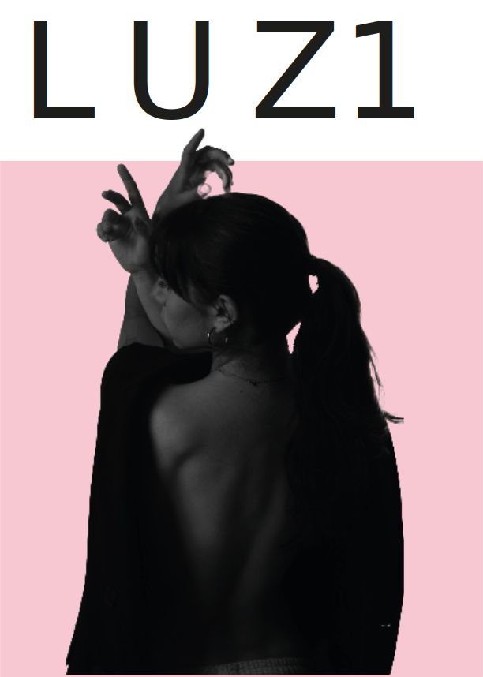

Visual
Narratives



"La fotografía en LUZ no es solo imagen, es el papel, es la tinta y es la intención detrás de cada disparo."
"La fotografía en LUZ no es solo imagen, es el papel, es la tinta y es la intención detrás de cada disparo."